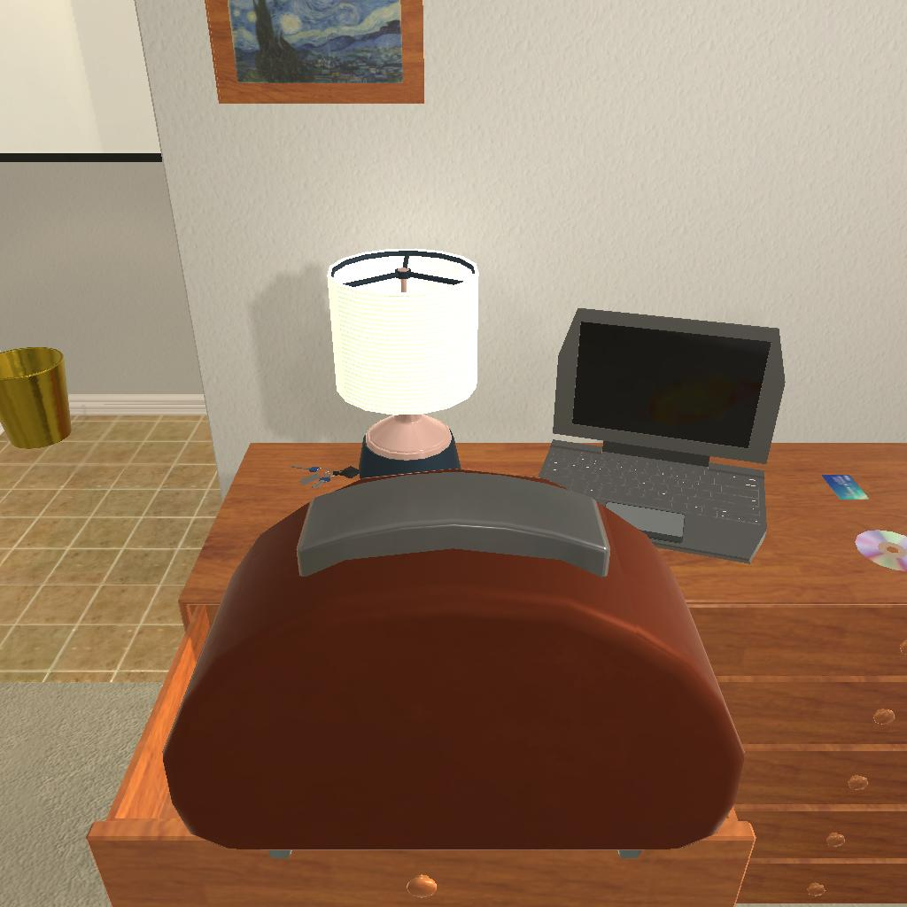

---------------------------------------------------------task: 1---------------------------------------------------------
--------------------------------------------------------------------------------------------------------------------------------------------------------------------
--------------------------------------------------------------------------------------------------------------------------------------------------------------------
Step:--------------------------------------------------------------------------4-------------------------------------------------------------------------------
----------------------------------------
VLM Prompt:
**Task**
Please perform as an embodied AI agent. Our final objective is to look at alarmclock under the desklamp. Below is the plan for completing the task, the current observation, alongside historical data and admissible actions for the next step. Please determine the best action for the next step!
**Plan**
Below is a detailed step-by-step plan to complete the task.
1. Find an alarm clock.
2. Pick up the alarm clock.
3. Locate a desklamp.
4. Turn on the desklamp.
5. Hold the alarm clock under the desklamp to look at it.
**Current Observation**
Displayed is an image capturing the current position of the agent.
**History Information**
Displayed are the previous observations with their corresponding actions.
Current State 1:
1. Place: Unspecified location, likely a bedroom
2. Step Index in Plan: 1
3. Objects: dresser with multiple drawers
4. Action: go to dresser 1
Current State 2:
1. Place: Bedroom
2. Step Index in Plan: 1
3. Objects: Laptop, CD, Keychain, Credit Card, Pen
4. Action: Go to drawer 1
Current State 3:
1. Place: Bedroom
2. Step Index in Plan: 1
3. Objects: Alarm clock, dresser, desklamp, laptop
4. Action: Open drawer 1
Current State 4:
1. Place: Bedroom
2. Step Index in Plan: 1
3. Objects: Alarm clock, Drawer 1
4. Action: Take alarm clock 1 from drawer 1
**Admissible Actions**
(1): go to bed 1
(2): go to dresser 1
(3): go to drawer 2
(4): go to drawer 3
(5): go to drawer 4
(6): go to drawer 5
(7): go to garbagecan 1
(8): go to drawer 6
(9): go to drawer 7
(10): go to drawer 8
(11): go to drawer 9
(12): go to drawer 10
(13): go to shelf 1
(14): go to shelf 2
(15): go to shelf 3
(16): go to shelf 4
(17): go to shelf 5
(18): go to shelf 6
(19): go to shelf 7
(20): close drawer 1
(21): put alarmclock 1 in/on drawer 1
(22): use desklamp 1
(23): examine alarmclock 1
**Analysis Guideline**
1. Analyze the **History Information** and determine our current step in the plan and our current place.
2. List all visible objects related to the task in the current observation.
3. Analyze the objects in the current observation based on the history and the requirements for the current step, and then determine if we can complete the step with the current observation.
4. Analyze and decide on the most appropriate action to take.
5. Summarize the analysis using the following format: "Analysis: [The summarization of the analysis], The Most Appropriate Action: (i which is the integer.): [Selected action]"
**Notes**
1. We must complete each step of the plan in order and cannot skip steps when the previous ones are not finished.
2. For "Go to" actions listed as "go to xxx [n]", interpret this as there are n distinct actions available: "go to xxx 1", "go to xxx 2", ..., "go to xxx n". Select one specific action from these options instead of using "go to xxx [n]".
3. If receptacles such as drawers, cabinets, and so forth are closed in the current observation, we may try to open them.
4. Pay attention to synonyms and ensure clarity in the terms used.
5. If there is no history available, we are at the first step and the current place is "Unknown".
6. The most appropriate action must be in the **Admissible Actions**, and we cannot generate a new action that is not in the **Admissible Actions**.
**Answer**
Please select the most suitable action by following the **Analysis Guideline**, keeping the above **Notes** in mind.
----------------------------------------
----------------------------------------
VLM Response:
Analysis: Based on the History Information, we have successfully completed step 1 of the plan by finding an alarm clock and step 2 by picking it up. The Current Observation shows an alarm clock in our possession, a dresser, a desklamp, and a laptop. According to the plan, the next steps involve locating a desklamp, turning it on, and holding the alarm clock under it to look at it. Since the desklamp is already located and visible in the current observation, we can proceed to step 4, which is to turn on the desklamp. The Admissible Actions list includes "use desklamp 1" which aligns with our next step in the plan.
The Most Appropriate Action: (22): use desklamp 1
----------------------------------------
----------------------------------------
>>> Refine VLM Response and Get Pure Action: use desklamp 1
----------------------------------------
-----------------------------------------------------------------
Running time: 7.668471813201904 seconds
Total Money: 0.69834
-----------------------------------------------------------------
-----------------------------------------------------------------
Summarization Prompt:
**Context**
Analysis: Based on the History Information, we have successfully completed step 1 of the plan by finding an alarm clock and step 2 by picking it up. The Current Observation shows an alarm clock in our possession, a dresser, a desklamp, and a laptop. According to the plan, the next steps involve locating a desklamp, turning it on, and holding the alarm clock under it to look at it. Since the desklamp is already located and visible in the current observation, we can proceed to step 4, which is to turn on the desklamp. The Admissible Actions list includes "use desklamp 1" which aligns with our next step in the plan.
The Most Appropriate Action: (22): use desklamp 1
**Summary Format**
1. Place: [Specify the current location]
2. Step Index in Plan: [Dispkay the current step number in the plan before taking the current action]
3. Objects: [List the objects relevant to the task]
4. Action: [Describe the most appropriate action without the "(x)" and keep the integer of the object]
Please analyze the **Context** and summarize the analysis using the **Summary Format**.
-----------------------------------------------------------------
-----------------------------------------------------------------
Summarization Response:
1. Place: Unspecified current location
2. Step Index in Plan: 4
3. Objects: Alarm clock, dresser, desklamp, laptop
4. Action: use desklamp 1
-----------------------------------------------------------------
-----------------------------------------------------------------
Text Observation:You turn on the desklamp 1.
-----------------------------------------------------------------
SUCCEED